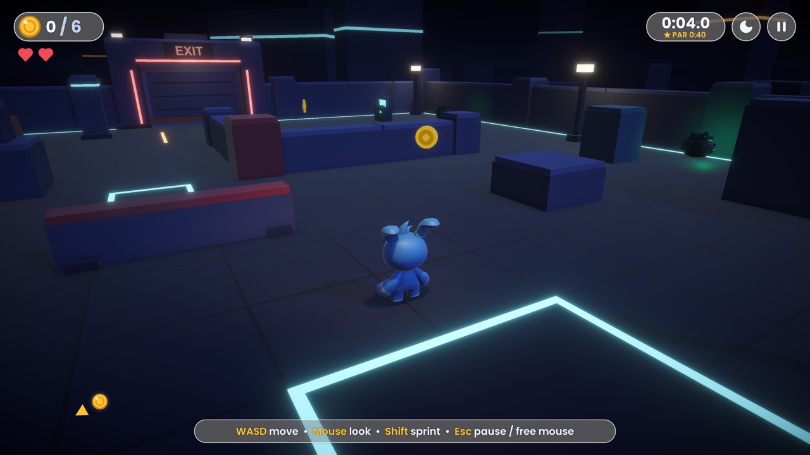

GOLD RUSH · Part 6
Day, night, sound and effects
The last 10% of polish is what makes a game feel finished. In this part: a day/night switch that blends lights, fog, sky and colours; sound effects and music made from maths with no audio files; particles; and small UI animations.


1Day and night
Press N or the sun/moon button. In 1.5 seconds the level changes from a bright afternoon to a blue night with glowing lamps and a lantern on the hero. Levels 3 and 4 and the Daily Rush start at night (night = true in Data.cs), and the menu always starts at night.
Three scripts work together:
| Script | Job |
|---|---|
EnvironmentSetup | Runs once at the start. Creates the sun, the skybox, and a post-processing Volume with bloom, vignette and tonemapping, then creates DayNight. |
DayNight | Holds one number, Value: 0 = day, 1 = night. Each frame it moves it toward the target and updates everything. |
DayNightTint, NightLight | Components in the level scene: which materials change colour, and which lights turn on at night. |
2Blending between two looks
Scripts/World/DayNight.csstatic float Smooth(float t) => t * t * (3f - 2f * t);
void Update()
{
if (Mathf.Approximately(value, target)) return;
value = Mathf.MoveTowards(value, target, Time.unscaledDeltaTime / Mathf.Max(0.05f, transitionTime));
ApplyNow();
}MoveTowardswalksvaluetoward 0 or 1. Dividing bytransitionTime(1.5) means a full change takes 1.5 s.- Unscaled time means it still works while the game is paused.
Smoothis the smoothstep curve: it starts slow, speeds up, and ends slow.
Then ApplyNow() uses Color.Lerp and Mathf.Lerp to mix two complete looks:
float t = Smooth(value);
RenderSettings.ambientSkyColor = Color.Lerp(DaySky, NightSky, t);
RenderSettings.fogColor = Color.Lerp(DayFog, NightFog, t);
RenderSettings.fogStartDistance = Mathf.Lerp(40f, 18f, t);
RenderSettings.fogEndDistance = Mathf.Lerp(140f, 75f, t);| What changes | Day | Night |
|---|---|---|
| Sun intensity | 1.35, warm white | 0.45, blue |
| Fog | light blue-grey, from 40 m to 140 m | dark navy, from 18 m to 75 m |
| Sky exposure | 1.1 | 0.06 |
| Bloom | 0.6 | 1.1 (lamps glow more) |
| Vignette | 0.25 | 0.38 (darker corners) |
Lerp(a, b, t) means “go t of the way from a to b”. With t = 0.5 you get exactly half way. This one idea animates the whole scene.
3Materials and lamps
Open Level1.unity and select the root Level 1 - Training Yard. Its Day Night Tint component has a list: each entry is a Material with a Day colour and a Night colour. When the level starts, it makes a copy of each material and gives the copy to DayNight to recolour.
Extra colours for prefabs you drag in come from Resources/DayNightPalette.asset. If both list the same material, the scene's Day Night Tint wins.
Lamp posts have a NightLight component, with one field, Night Intensity. The light fades in at night and is switched off by day. Add a NightLight to any new light that should only shine at night.
4Sound from maths
There are no audio files in this project. Synth.cs computes every sound sample by sample, 22,050 samples per second, when the game starts.
A sound is made from waves. One cycle of each wave shape:
Scripts/Audio/Synth.csstatic double Osc(W w, double p)
{
switch (w)
{
case W.Sine: return Math.Sin(TwoPi * p);
case W.Square: return p < 0.5 ? 0.6 : -0.6;
case W.SoftSq:
{
double x = TwoPi * p;
return (Math.Sin(x) + Math.Sin(3.0 * x) / 3.0 + Math.Sin(5.0 * x) / 5.0) * 0.8;
}
case W.Tri: return 4.0 * Math.Abs(p - 0.5) - 1.0;
case W.Saw: return (2.0 * p - 1.0) * 0.7;
}
return 0.0;
}p goes from 0 to 1 once per cycle. A 440 Hz note repeats this 440 times a second. Hz(midi) turns a piano key number into a frequency (69 is A = 440 Hz).
Tone(...) plays a wave with an envelope: a quick fade-in (attack), a fade-out over time (decay), and a short release at the end. Without an envelope every sound would start and stop with a click. Noise(...) makes hiss for footsteps, hits and whooshes.
Here is the whole coin sound: a short B note, then a longer E above it, each made of a few waves stacked together:
static float[] Coin()
{
var b = Buf(0.36);
double b5 = Hz(83), e6 = Hz(88);
Tone(b, 0.0, 0.085, b5, b5, 0.5f, W.Sine, 0.002, 6, 0.01);
Tone(b, 0.0, 0.085, b5, b5, 0.15f, W.Tri, 0.002, 6, 0.01);
Tone(b, 0.075, 0.28, e6, e6, 0.55f, W.Sine, 0.002, 9, 0.05);
Tone(b, 0.075, 0.28, e6, e6, 0.15f, W.Tri, 0.002, 11, 0.05);
Tone(b, 0.075, 0.28, e6, e6, 0.06f, W.SoftSq, 0.002, 14, 0.05);
Tone(b, 0.075, 0.2, e6 * 2.0, e6 * 2.0, 0.07f, W.Sine, 0.002, 16, 0.05);
return b;
}Finally Make() puts the numbers into a real AudioClip with AudioClip.Create and clip.SetData.
| Sound ids |
|---|
coin · step · alert · hit · win · lose · power · click · gate · star · buy · error · count · go · whoosh · music |
The music is an 8-bar loop at 112 BPM (about 17 seconds) in A minor: bass, chords, hi-hats and a melody picked by a seeded random generator, so it is the same tune every time.
5Playing sounds and music
AudioFX is the one place that plays audio. To play a sound from anywhere:
AudioFX.Play("coin"); // normal
AudioFX.Play("step", 0.35f, 1.1f); // quieter, a little higher- It keeps a pool of 8
AudioSources, so up to 8 sounds can overlap. A 9th steals the oldest. - The coin sound gets a little higher for each coin in a row (
pitch = 1 + 0.05 × (Collected % 5)), which makes collecting feel rewarding. - When a monster is chasing you,
SetTension(true)makes the music slightly faster and louder. - On win or lose,
Duck()turns the music down for a moment so the jingle stands out. - The MUSIC and SOUND switches in Settings and Pause are saved in the save file.
6Particles
FX.cs builds ParticleSystems from code. Each effect is one line to call:
| Call | Used for |
|---|---|
FX.CoinBurst(pos) | Golden sparkles when you grab a coin |
FX.Burst(...) | Power-up pickup, in the power-up's colour |
FX.Puff(pos, color) | A dust cloud when you are hit |
FX.Trail(...) | Running dust and the SPEED trail |
FX.Confetti(pos) | Winning, and buying in the shop |
public static void CoinBurst(Vector3 pos)
{
Burst(pos, new Color(1f, 0.9f, 0.4f), new Color(1f, 0.65f, 0.1f), 26, 2.5f, 6f, 0.35f, 0.7f, 0.8f, true);
Burst(pos, new Color(1f, 1f, 0.8f, 0.9f), new Color(1f, 0.85f, 0.4f, 0.6f), 6, 0.2f, 0.6f, 1.4f, 0.35f, 0f, false);
}The numbers after the colours are: how many particles, the slowest and fastest speed, the size, how long they live, and gravity. Together with a small camera Shake and the floating “+1” text, these turn a simple pickup into a satisfying moment. Game makers call this juice.
7UI animation with tweens
A tween animates a value from A to B over time. Tween.cs has helpers used all over the UI:
| Helper | Effect |
|---|---|
Tween.PopIn(t) | Grows from nothing with a small overshoot (dialogs, stars) |
Tween.Punch(t) | A quick bounce (buttons, the coin counter) |
Tween.Fade(group, to, dur) | Fades a CanvasGroup in or out |
Tween.Move(rt, to, dur) | Slides a UI element |
The easing functions (OutCubic, OutBack, OutElastic…) change how the motion feels. OutBack goes a little past the end and comes back, which looks bouncy. Tweens use unscaled time by default, so the pause menu still animates.
Some small helper scripts add life without any tween:
CoinFlipsquashes the coin icon's width with a cosine, which looks like a 3D flip.Bobmakes things float and pulse with sine waves (the low-heart warning uses it).LogoTitlebuilds the 3D-looking GOLD RUSH title from stacked text layers that follow the mouse.
// CoinFlip.cs
float x = cycle < flipTime ? Mathf.Cos(cycle / flipTime * Mathf.PI * 2f) : 1f;
// keep a sliver of width so it never fully disappears
transform.localScale = new Vector3(Mathf.Sign(x) * Mathf.Max(0.08f, Mathf.Abs(x)), 1f, 1f);8Try it
A slow sunset
In DayNight.cs, change public float transitionTime = 1.5f; to 5f. Press N and watch a 5-second sunset.
Purple night fog
In DayNight.cs, change NightFog to new Color(0.25f, 0.08f, 0.3f). For thicker fog, change Mathf.Lerp(140f, 75f, t) to Mathf.Lerp(140f, 40f, t). Play Level 3, which starts at night.
A green night floor (no code)
In Level1.unity, select Level 1 - Training Yard. In Day Night Tint, find the entry with the Floor material and set its Night colour to bright green. Play and press N. (Edit the scene component, not the palette asset: the scene wins.)
Your own sound
In Synth.cs, add a new method next to Whoosh():
static float[] Freeze() { var b = Buf(0.5); Tone(b, 0.0, 0.5, 1800, 600, 0.4f, W.Sine, 0.005, 4, 0.1, 0.02, 18); Noise(b, 0.0, 0.4, 0.2f, 9000, 3000, 2000, 0.002, 6, 0.1); return b; }Register it in BuildAll(), before return d;:
d["freeze"] = Make("freeze", Freeze(), 0.85f);To hear it, change AudioFX.Play("whoosh", 0.7f) in DayNightButton.cs to AudioFX.Play("freeze") and press N. You will use this sound for the Freeze power-up in the exercises.
Faster music
In Synth.cs, change const double bpm = 112.0; to 140.0.
A huge coin explosion
In FX.CoinBurst, change 26 to 120 and 0.35f to 0.6f.
- I can explain how one number from 0 to 1 and
Lerpblend the whole day/night look. - I know how a sound is built from waves and an envelope, and how to play it with
AudioFX.Play. - I can trigger a particle effect and a UI tween from code.